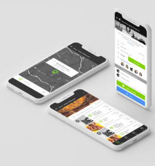

Eventfeed es una Startup Alemana, que busca convertirse en el mayor referente de eventos multitemáticos de Europa como: conciertos, arte, exposiciones, fiestas, festivales, teatro, cine, deportes, entre otros. La información que se divulga facilita el acceso a esta “jungla de eventos”.
Es una plataforma y aplicación en línea que contiene casi todos los eventos públicos (90%) agregados en una base de datos, orientado a la demanda de los usuarios y está socialmente conectado
Dentro de las necesidades a resolver y oportunidades de mejora para la construcción de una Aplicación Web Progresiva (PWA), era encontrar la manera de conectar a los usuarios con una plataforma tecnológica de fácil navegación.
DESARROLLO WEB EVENTFEED
Como primera medida a resolver, el equipo de desarrollo de Tuatara propuso crear una PWA (aplicación web progresiva),la cual contenga todos los eventos públicos agregados para una mejor búsqueda dando la opción de poder estar siempre conectado.
Con lo mencionado anteriormente, las PWA son un conjunto de tecnologías con finalidad de desarrollar aplicaciones escalables, son muy similares a una aplicación web,
Ventaja competitiva
Eventfeed es una herramienta individual y socialmente conectada que se centra en los intereses y utiliza innovaciones técnicas para proporcionarles fácilmente los eventos culturales deseados en cualquier hora.
La validez, integridad y actualidad (confiabilidad) es un tema central, razón por la cual la información actualizada es indispensable.
El enfoque en los intereses individuales de los usuarios, permite el no saturar de información de ofertas, sino que se alimentan en función de la demanda.
¿Por qué escogimos una aplicación web progresiva (PWA)?
La efectividad y búsqueda instantánea de las PWA con asistencia en tiempo real y con mayor eficiencia, llevó a Eventfeed a tomar la decisión de mejorar la búsqueda de este tipo de aplicaciones web progresivas, para cambiar las dinámicas sociales, según el interés de los usuarios. Se trata de no limitarse a un solo grupo de usuarios sino llegar a un segmento mucho más grande.

DISEÑO DE EXPERIENCIA DE USAUARIO(UX)
/INTERFAZ DE USUARIO (UI)
Se partió de la necesidad del cliente por abordar el tema de los eventos en Alemania, bajo esta premisa, se quiso abordar las diferentes maneras de adquirir las entradas a los eventos por cada ciudad. El diseño que se llevó a cabo bajo unos parámetros denominados Material Design “es un lenguaje que combina los principios innovadores de la tecnología con las normas clásicas del diseño”Se trata de entender cómo abordar la experiencia del usuario dentro de la interfaz.